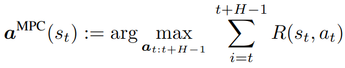
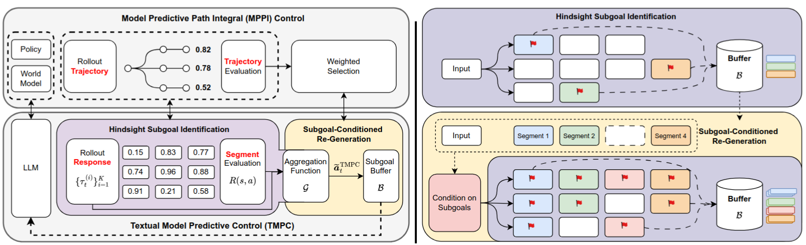
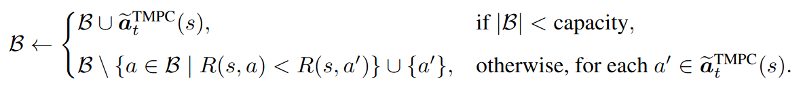
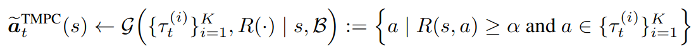
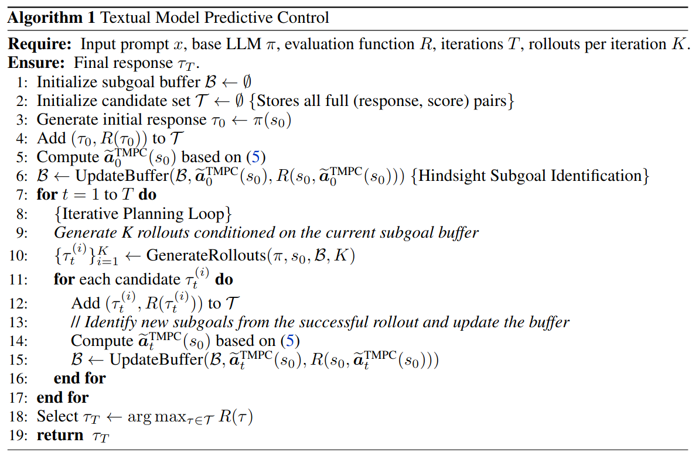
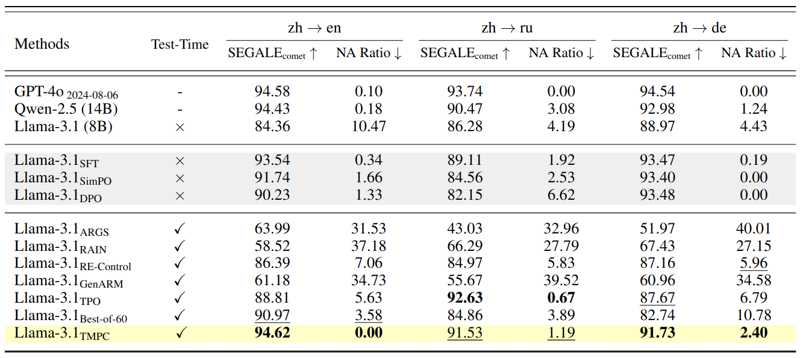
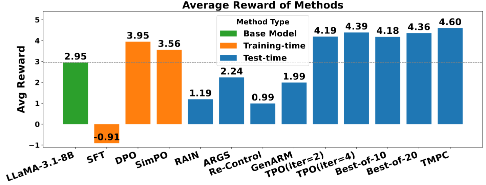
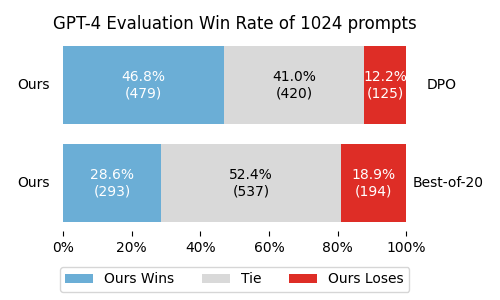
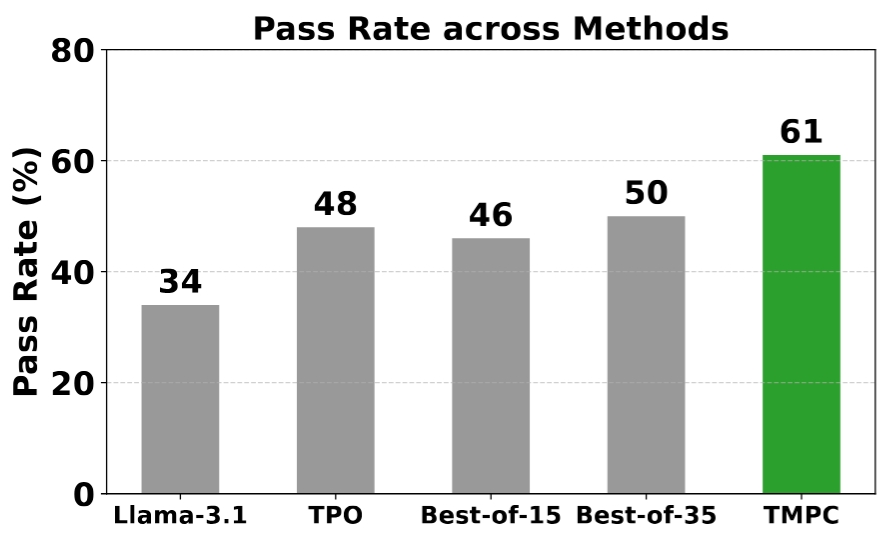
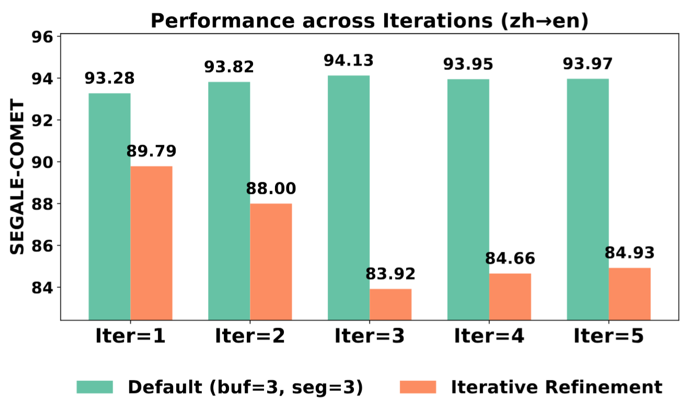

Abstract
Preference alignment of large language models (LLMs) is often achieved through finetuning, which can be costly and slow to iterate. We target test-time alignment—improving outputs at inference without updating model weights—by viewing text generation as a sequential decision-making problem. We identify two complementary bottlenecks: token-level guided decoding struggles with a long decision horizon, while response-level rewriting suffers from a high-dimensional action space. Inspired by Model Predictive Control (MPC), we propose Textual Model Predictive Control (TMPC), a predictive planning framework that repeatedly: (i) samples short rollouts, (ii) evaluates them with a reward model, (iii) extracts reusable hindsight subgoals from high-reward segments, and (iv) performs subgoal-conditioned re-generation to improve the next segment. TMPC avoids hard, pre-defined text boundaries by enabling adaptive segmentation during generation. Across discourse-level machine translation, long-form response generation, and program synthesis, TMPC improves both preference reward and downstream task performance.
From MPC to Textual MPC
Model Predictive Control (MPC) solves long-horizon decision making by repeatedly optimizing over a short moving horizon. At step t, MPC chooses the next action by approximately maximizing the cumulative reward over a horizon H (with H ≪ T), executes the first action, then re-plans from the new state. TMPC transfers this principle to language generation by treating text as a trajectory and using a preference reward model to score short rollouts.

Optimize locally over a moving horizon H instead of globally optimizing over the full length T
TMPC Framework
TMPC adapts Model Predictive Control (MPC) to language generation by repeatedly planning over a short horizon. At iteration t, it (1) samples K candidate rollouts for the next segment from the current state (prompt + partial output), (2) evaluates each rollout with a preference reward model R, (3) retrospectively extracts high-reward intermediate segments as subgoals and stores them in a bounded buffer B, and (4) regenerates the next segment by conditioning on buffered subgoals. This short-horizon re-planning reduces long-horizon brittleness while avoiding unstable whole-response rewrites.

Framework overview: sample short-horizon rollouts, score with a reward model, distill high-quality intermediate segments into a subgoal buffer B, then regenerate the next segment conditioned on B.
Two Core Components
TMPC relies on two mechanisms expressed by the exact update rules below. We show them as equations to preserve the method’s precise design and to make the page faithful to the paper.
Hindsight subgoal identification

Buffer update. After scoring rollouts, TMPC aggregates high-reward segments into the subgoal buffer B. When B reaches capacity, lower-quality subgoals are replaced, keeping only the most useful waypoints.
Subgoal-conditioned re-generation

Re-generation. TMPC filters rollouts by a reward threshold and conditions the next segment on buffered subgoals in B, guiding generation toward previously validated high-reward directions while keeping the planning horizon short.
Algorithm
The full procedure alternates between rollout sampling, reward evaluation, hindsight subgoal buffering, and subgoal-conditioned re-generation until termination.

Experiments & Results
Discourse-level Machine Translation (WMT’24 Literary Translation)
TMPC improves translation quality under document-level constraints by re-planning with short rollouts and reusing hindsight subgoals that correspond to meaningful context units.

Discourse-level translation: improvements under long-context constraints (e.g., document-level coherence and style).
Long-form Response Generation (HH-RLHF)
We evaluate long-form instruction-following with a learned preference reward model. TMPC consistently increases the reward-model score, indicating improved alignment at inference time without updating model weights.

Higher reward-model scores indicate stronger alignment to the learned preference signal for long-form responses.
Deeper Analysis: Evaluation Signal, Hard-to-Segment Codegen, and Iterative Dynamics
Beyond aggregate benchmarks, we examine three complementary views of test-time alignment. (Left) On HH-RLHF, GPT-4 pairwise judgments provide a strong, task-agnostic signal for preference alignment, revealing how often TMPC produces outputs preferred by an external evaluator. (Middle) For code generation—where high-quality intermediate boundaries are often ambiguous—TMPC’s hindsight subgoals provide adaptive anchors that improve success without relying on fixed segmentation. (Right) In iterative translation, TMPC maintains steady gains across iterations compared with conventional iterative refinement, reflecting more stable progress when planning is kept short-horizon.

HH-RLHF (GPT-4). GPT-4 pairwise win rates: an external evaluator’s preference between TMPC and baselines, complementing reward-model-based evaluation.

Code generation. Code generation pass rates: when intermediate “boundaries” (what to fix next) are unclear, hindsight subgoals provide adaptive anchors for planning.

Iteration dynamics. Iteration-by-iteration trajectory: TMPC maintains steady improvements across iterations compared with conventional iterative refinement.
BibTeX
@inproceedings{
wang2026testtime,
title={Test-Time Alignment for Large Language Models via Textual Model Predictive Control},
author={Kuang-Da Wang and Teng-Ruei Chen and Yu Heng Hung and Guo-Xun Ko and Shuoyang Ding and Yueh-Hua Wu and Yu-Chiang Frank Wang and Chao-Han Huck Yang and Wen-Chih Peng and Ping-Chun Hsieh},
booktitle={The Fourteenth International Conference on Learning Representations},
year={2026},
url={https://openreview.net/forum?id=DsS3xRPSs5}
}